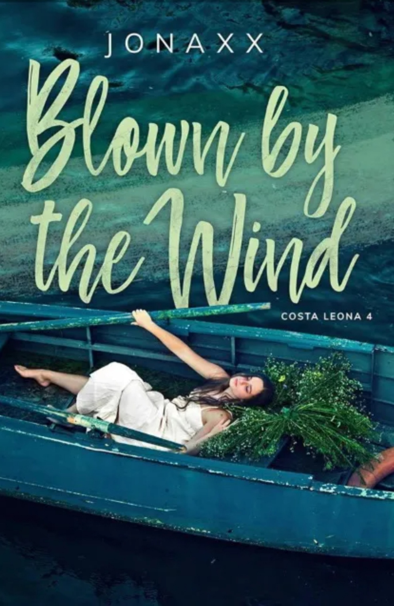

Blown by the wind

Simula
,"Fiercer!" the photographer demanded.
Inangat ko ang aking noo at inawang ang bibig. Nilagay ko ang aking kamay sa balikat ni Flyn.
"Carrie, chin to the left!"
flashes of blinding lights from the large lightings made me close my eyes for a brief moment. I opened it only to be showered with another set of shots.
Inside the studio were photographers, stylists, artists, and the staff of a famous magazine. Isang tipikal na araw sa aking trabaho.
Kung bakit hindi ako nakasisigurong maayos nga ang lagay ko ngayon ay hindi ko alam. This is all that I ever wanted to be. Or... maybe... it isn't.
"Flyn! You look too fierce!"